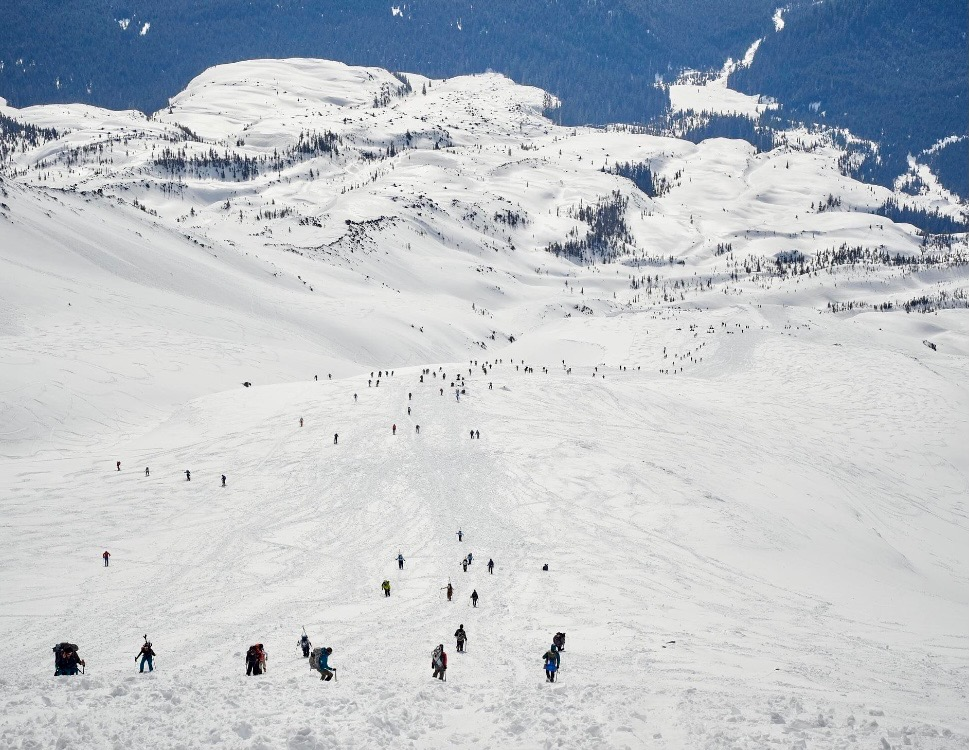
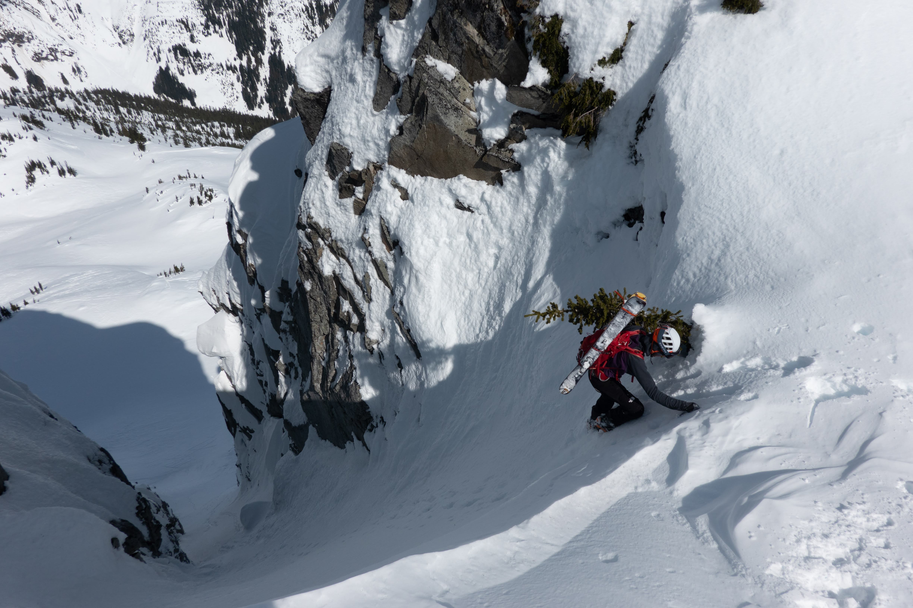

Recreation
Hundreds of people climbing Mount St Helens on March 13, 2021. Photo from Ralph Daub
Avalanche Fatality Mapping
https://github.com/tkakatsakis/Avalanche-MappingWashington Every Fatality by Avalanche: Link
Washington Every Death by Avalanche: Link
Existing Fatality Maps:
Utah Every Fatality from Avalanche: Link
Wyoming Every Fatality from Avalanche: Link
Relevant Media
https://freeskier.com/stories/avalanche-in-a-world-obsessed-with-social-media-avalanche-centers-are-relying-more-and-more-on-the-attention-grabbing-platforms-to-better-equip-backcountry-skiers?fbclid=IwAR1mMUAapqcEev8VgEzYQuSS0ITjhDJzBk5YOHocOimAN0gpgFzyWfns9Lshttps://freeskier.com/stories/want-snow-data-step-up-and-help?fbclid=IwAR364T7pwatOVoMJ_uxY2-2Yhbsdawo1AcdydAit5sJAYVOV_rIdPsQcW64
https://www.cbc.ca/news/canada/british-columbia/backcountry-avalanche-caution-bc-1.5869336?fbclid=IwAR1nu4xLa-7JTABuNMjkZn51C2Gge9p6cMBtiEcZvISmZToFpmkcVMtJ7Hw
https://www.seattletimes.com/life/outdoors/a-pandemic-winter-foretells-a-backcountry-skiing-boom-but-its-not-a-sport-to-take-lightly/?fbclid=IwAR00ZccjadTTSd5GRathnvdHwAbnRxiOLo0Vk50_mXv3qR7451iCxxS5tUY
https://theknow.denverpost.com/2021/02/19/colorado-backcountry-avalanches-february-2021/253439/
https://theknow.denverpost.com/2021/02/19/colorado-backcountry-avalanches-february-2021/253439/
https://snowbrains.com/court-case-of-men-who-triggered-avalanche-near-eisenhower-tunnel-co-in-march-2020-continues1/?fbclid=IwAR3ChBiPzKfyLx8UP0AJOI-Rf8E34b11AvnKsl0LOROIZhGsLAl9gHLBmQE
https://www.fox8live.com/2021/02/18/us-covered-snow-most-widespread-coverage-years/#:~:text=Snow%20covered%2073.2%25%20of%20the,fall%202003%2C%20according%20to%20NOAA
https://www.tetongravity.com/story/news/a-note-on-how-we-address-avalanche-fatalities?bwf_dp=t&bwf_entry_id=69392&bwf_token_id=23602&bwf_token=g9Pghe9gbR0EcTDJJeR9SeGge&fbclid=IwAR0UC7VAhs7eYfli6msGHl5rwhLDnZTlRJ_A_EzkY3h9n1bKg8ghLkszPrY
